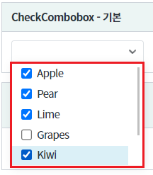
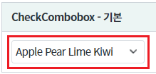
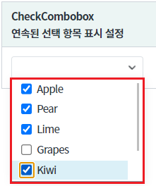
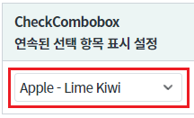
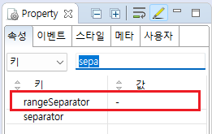
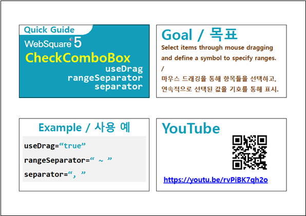

연속된 항목이 선택된 경우, 선택된 항목을 출력할 때, 첫번째 항목과 마지막 항목 사이에 구분자를 설정하는 예제입니다. 예를 들어 항목이 01,02,03,04,05가 있고 사용자가 01,02,03을 선택하면, 선택된 값을 01-03 형식으로 표시할 수 있습니다.
기본 (연속된 값의 구분자 미지정)
연속된 값의 구분자를 설정한 상태
[브라우저(Chrome) 실행 예시 - 항목 선택 예시]

선택된 항목이 기본 구분자인 공백으로 구분하여 표시됩니다.
선택 항목 출력 예시) Apple Pear Lime Kiwi
[브라우저(Chrome) 실행 예시 - 선택된 항목 예시]

[브라우저(Chrome) 실행 예시 - 항목 선택 예시]

선택된 항목 중 연속된 항목이 범위 구분자로 설정된 - 으로 범위가 표시합니다.
연속으로 선택된 항목) Apple, Pear, Lime
선택 항목 출력 예시) Apple - Lime Kiwi
[브라우저(Chrome) 실행 예시 - 선택된 항목 예시]

컴포넌트의 목록으로 출력될 데이터를 할당합니다. 하드 코딩, 스크립트로 할당, DataList 연동 모두 가능합니다. 데이터 할당하는 예시는 생략합니다.
목록의 데이터 할당 방법은 아래의 링크를 통해 확인할 수 있습니다.
[웹스퀘어5 SP5 개발 가이드] CheckComboBox 항목 설정
링크 : https://docs1.inswave.com/sp5_user_guide/8df43d1f59fab704#60e5063481c9c2ff
컴포넌트의 속성을 정의합니다.
[필수] rangeSeparator="구분자" //연속적으로 선택된 값의 구분자를 설정합니다.
예시 1) rangeSeparator=" - "
그림 1.웹스퀘어5 SP5 스튜디오의 Property View(속성창) 예시

<!-- CheckCombobox의 소스 본문 예시 --> <xf:checkcombobox rangeSeparator=" - "> <!-- 중략 --> </xf:checkcombobox>
rangeSeparator
[웹스퀘어5 SP5 개발 가이드] CheckComboBox
링크 : https://docs1.inswave.com/sp5_user_guide/8df43d1f59fab704#00d68253341f365d
[웹스퀘어5 SP5 개발 가이드] CheckComboBox 마우스 드래깅을 통한 선택 및 연속된 값 표시
링크 : https://docs1.inswave.com/sp5_user_guide/8df43d1f59fab704#12db2e2c0c70c538
CheckComboBox 마우스 드래깅을 통한 선택 및 연속된 값 표시
링크 : https://youtu.be/rvPiBK7qh2o
